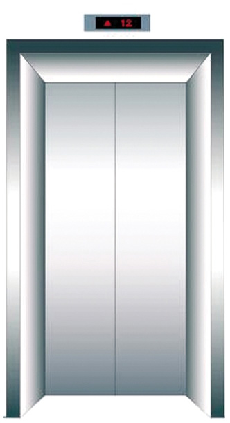

明年起 电动车禁止上电梯电梯停用不公示原因最高罚2万
发布时间：2016-11-22 06：58：22 来源：郑州晚报

报社讯 电梯里要安装监控设备，电动车不能上电梯。近日，《郑州市电梯使用安全管理办法》通过并对外公布，电梯需要安装监控设备并保护有效运行，违者最高可被罚3万元。同时明确乘坐电梯的7种禁止行为，包括电动车禁止上电梯等。该《办法》字2017年1月1日起施行。郑报融媒记者 董艳竹 李雪这种行为《办法》
这种行为《办法》
命令禁止
《办法》所称的电梯，包括载人（货）电梯、自动扶梯和自动人行道等。
对于电梯要不要安装监控一事，《办法》明确，不仅要安装还要保持有效运行。电梯使用单位应当安装电梯安全运行监控设备，并与市特种设备安全监督管理部门的质量安全监管平台链接，保持起有效运行。
住宅小区电梯需要改造、修理、更新的，电梯使用单位和业主委员会应当及时组织落实，业主应当履行资金筹集义务。
其中，已建立住宅专项维修资金的，按照规定在住宅专项维修资金中列支。未建立住宅专项维修资金或者住宅专项维修资金余额不足的，业主对费用承担有约定的，按照约定承担；没有约定或者约定不明确的，乡镇人民政府、街道办事处应当协助组织业主筹集落实资金。